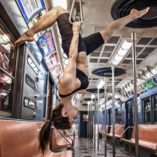

Wait Times on Google
2015
My role
UX design, with heavy emphasis on marrying visual with interaction design. UX strategy and definition as sole designer on project. I worked with research, writing, motion, web and native engineers, and project management to collaborate, define and deliver a road map alongside various explorations and a shippable product on time and with loads of public accolades.
Alex's design explorations on how to present data in various abstracted ways really helped the team think about what was important to convey.

By choosing to prioritize this project and challenging previous eng/PM assumptions, Alex was able to justify this throughout VP-level reviews and landed one of our team's most widely-recognized launches of the year.
- UX lead
- Visual design
- UX
- Interaction design
- Prototyping
Challenge
People need help planning their days
Today, we can confidently overlay usual wait times with live and historical crowd volume. Right now, we can surface this info for over 1B dining establishments. We considred a number of use cases and existing models to help determine the right UI and location to start with. Over 30% of users attempt to interact with the graph bars, and we don't currently provide and data in order for that to be useful. Let's converge on findings and patterns and see what kind of new xperience we can provide.
User flows
Pairing with Popular Times was more scalable than with hours of operation
The best place to surfce this was our existing Popular Times Graph. A slider was too complex for v1, thus selecting an hour manually was our first approach. Though the tooltip became quite verbose, depending on time and language, we felt it was a good place to start. Our existing live snippet didn't localize well and wasn't a noticeable location when traversing hours. Enter: the tooltip.
Explorations
We then explored existing + new visual design patterns
A tooltip UI allowed users to traverse hours and showcase a peak wait time for the selected day. Originally, the beak on the tooltip aimed to add more attention to the selected hour, but didn't scale to the edge well. The summary focused on the worst case scenario for that day. Most users wanted to get a general sense for when not to go, but also wanted the ability to see other times.
Outcome
An interactive tooltip allowed for more flexibility + up to the hour interaction
Previously, 31% of users attempt to interact with the graph's bars already. Addtionally, 2/5 restaurants have varied wait times between mornings, afternoons and evenings.
A tooltip UI allowed users to traverse hours and showcase a peak wait time for the selected day. Originally, the beak on the tooltip aimed to add more attention to the selected hour, but didn't scale to the edge well. The summary focused on the worst case scenario for that day. Most users wanted to get a general sense for when not to go, but also wanted the ability to see other times.
Research told us that over 65% of participants located, interacted with and understood the tooltip after a few iterations.
A tooltip UI allowed users to traverse hours and showcase a peak wait time for the selected day. Originally, the beak on the tooltip aimed to add more attention to the selected hour, but didn't scale to the edge well. The summary focused on the worst case scenario for that day. Most users wanted to get a general sense for when not to go, but also wanted the ability to see other times.
Research told us that over 65% of participants located, interacted with and understood the tooltip after a few iterations.
Take-aways + Next steps
Tune UI to scale + support more verticals
This feature started as a crazy idea, and what I feel worked pretty well as a v1. We've had some quality and UI issues surface since launch, but aimin to improve both and expand to new surfaces and new places within Search and Maps. Through a few more studies, we found that the beak wasn't scaling well during 24 hour cases, and that users were putting too much correlation between est. wait and the actual graph, which was to illustrate crowd volume.
Just because a place is busy, doesn't mean there's a long wait and visa versa. Thus, we decided it was more intuitive to let wait act as a supplimentary piece to busyness.
See it live on Maps
Just because a place is busy, doesn't mean there's a long wait and visa versa. Thus, we decided it was more intuitive to let wait act as a supplimentary piece to busyness.
See it live on Maps
More projects
© 2018 | Alex S. Lakas